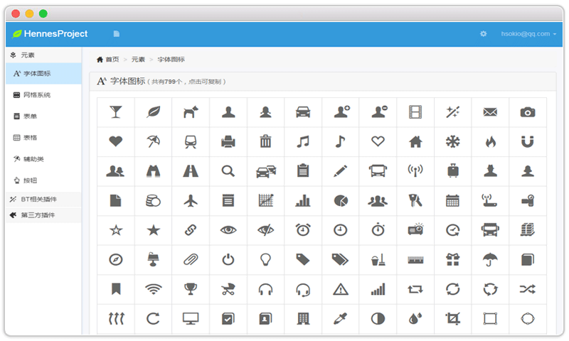
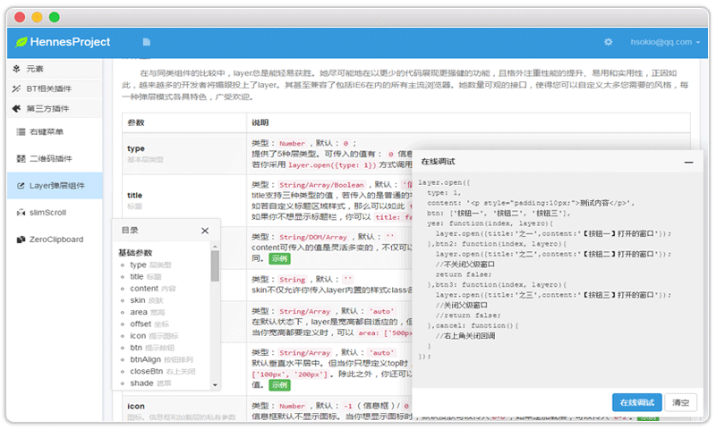
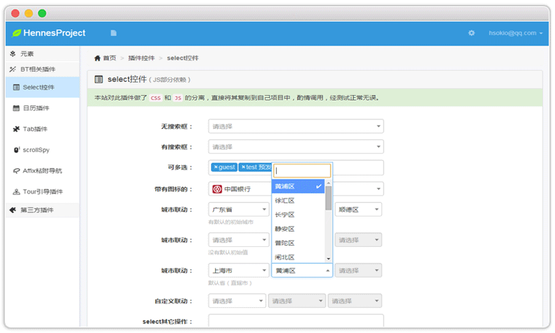
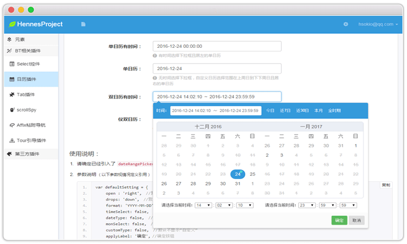
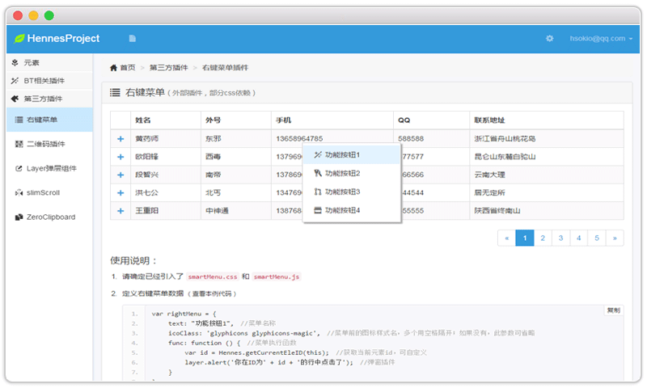

CSS字体图标
本例中共收集了799个字体图标并一 一罗列，对其样式也做了分离，方便学习和运用；在本例DEMO中点击每个图标可以查看其构成，亦可将其复制到自己的项目中使用。
DEMO
按钮类
按钮是每个网站必不可少都会运用到的，但是往往因为其重用性不够或是根本没有，而增加了代码量，亦不易于阅读，本例旨在减少代码量，提升其重用性提供了一个解决方案。
DEMO
辅助类
一个优秀的网站对于辅助类的定义绝对是登峰造极的，其对网站的开发速度、后期的维护管理和其他开发人员的阅读等都起到关键性的作用；其意义相当于建房时的地基，作用很关键。
DEMO
Previous
Next
和官网的BootStrap有何不同？
去掉了CSS中字体图标样式，新建
glyphicons
字体图标样式，方便移植使用；
对BootStrap
(CSS&JS)
做了大量的精简，修改了系统默认字体；
去掉了不符合国内使用习惯的
modal.js
，使用目前较为流行的
layer.js
弹层插件；
去掉了警告框
alert.js
及其样式等；
讲解时下常用插件，包括BootStrap自带插件，经测试，可分离单独使用。
……
进去看看
系统三大块
从最基本的页面构成元素到深层次的插件运用
元素
讲解如何运用字体图标、风格系统、表单、表格、按钮和其它一些辅助类来构建一个基本的网站
BT相关插件
讲解BootStrap相关些插件，并对其下的Select控件和日历插件进行了完全分离，不再依赖BT.
第三方插件
对时下比较流行或工作中经常用到的插件进行了相应的解读，后继会不断修复bug并补充新插件
版块效果
浏览版块下各页面大致展现方式





Previous
Next